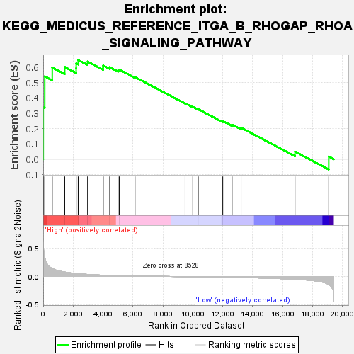
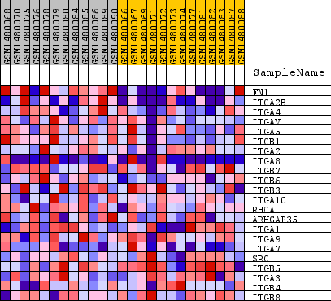
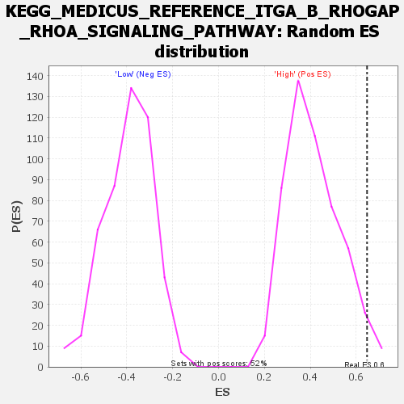

| Dataset | WG6v3.CYGB.cls#High_versus_Low.CYGB.cls#High_versus_Low_repos |
| Phenotype | CYGB.cls#High_versus_Low_repos |
| Upregulated in class | High |
| GeneSet | KEGG_MEDICUS_REFERENCE_ITGA_B_RHOGAP_RHOA_SIGNALING_PATHWAY |
| Enrichment Score (ES) | 0.6469749 |
| Normalized Enrichment Score (NES) | 1.5686071 |
| Nominal p-value | 0.023121387 |
| FDR q-value | 0.23711479 |
| FWER p-Value | 0.963 |

| SYMBOL | TITLE | RANK IN GENE LIST | RANK METRIC SCORE | RUNNING ES | CORE ENRICHMENT | |
|---|---|---|---|---|---|---|
| 1 | FN1 | FN1 | 7 | 0.574 | 0.3392 | Yes |
| 2 | ITGA2B | ITGA2B | 105 | 0.348 | 0.5398 | Yes |
| 3 | ITGA4 | ITGA4 | 606 | 0.142 | 0.5977 | Yes |
| 4 | ITGAV | ITGAV | 1440 | 0.079 | 0.6013 | Yes |
| 5 | ITGA5 | ITGA5 | 2202 | 0.053 | 0.5933 | Yes |
| 6 | ITGB1 | ITGB1 | 2206 | 0.053 | 0.6244 | Yes |
| 7 | ITGA2 | ITGA2 | 2339 | 0.050 | 0.6470 | Yes |
| 8 | ITGA8 | ITGA8 | 2967 | 0.037 | 0.6365 | No |
| 9 | ITGB7 | ITGB7 | 4006 | 0.024 | 0.5970 | No |
| 10 | ITGB6 | ITGB6 | 4008 | 0.024 | 0.6108 | No |
| 11 | ITGB3 | ITGB3 | 4447 | 0.019 | 0.5997 | No |
| 12 | ITGA10 | ITGA10 | 5004 | 0.015 | 0.5799 | No |
| 13 | RHOA | RHOA | 5090 | 0.014 | 0.5841 | No |
| 14 | ARHGAP35 | ARHGAP35 | 6138 | 0.009 | 0.5354 | No |
| 15 | ITGA1 | ITGA1 | 9485 | -0.003 | 0.3647 | No |
| 16 | ITGA9 | ITGA9 | 9999 | -0.005 | 0.3410 | No |
| 17 | ITGA7 | ITGA7 | 10361 | -0.006 | 0.3260 | No |
| 18 | SRC | SRC | 12002 | -0.012 | 0.2487 | No |
| 19 | ITGB5 | ITGB5 | 12623 | -0.015 | 0.2256 | No |
| 20 | ITGA3 | ITGA3 | 13226 | -0.018 | 0.2053 | No |
| 21 | ITGB4 | ITGB4 | 16828 | -0.051 | 0.0497 | No |
| 22 | ITGB8 | ITGB8 | 19084 | -0.142 | 0.0174 | No |

